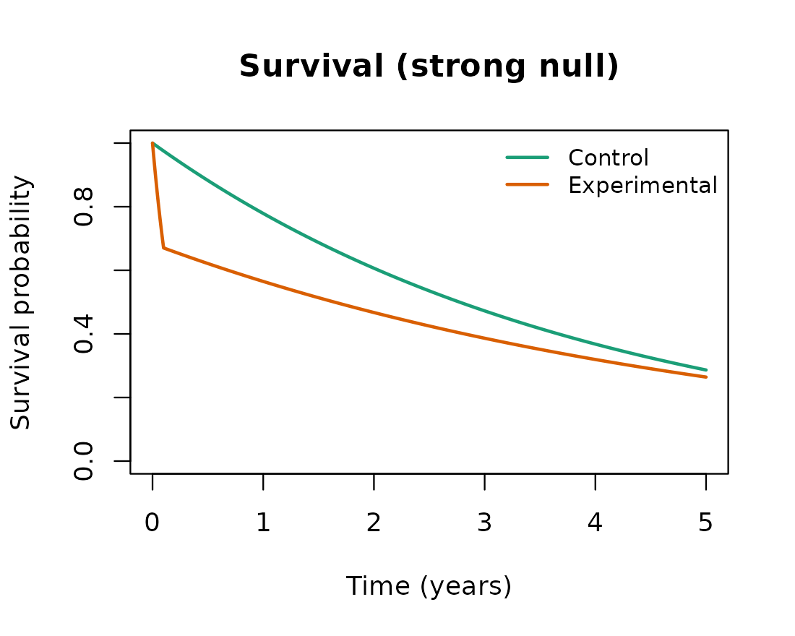

Investigating the Freidlin and Korn strong null scenario
Source:vignettes/investigate-freidlin-and-korn.Rmd
investigate-freidlin-and-korn.RmdOverview
Weighted log-rank tests and the MaxCombo test gain power by emphasizing the part of the follow-up where the treatment effect is expected to appear. Freidlin and Korn (2019) caution that this same emphasis can be a liability: a test that down-weights early events can declare the experimental arm superior even when that arm is uniformly worse, because a late portion of the survival curves where the experimental hazard happens to be lower is allowed to dominate the test statistic. This vignette reproduces the strong null scenario they use to make that point. To keep the comparison interpretable, it also includes the weak null in which the two arms are identical, so that the behavior under the strong null can be read against a baseline in which every method is valid. In the terminology of Magirr and Burman (2019), the weak null is the hypothesis of equal survival functions, while the strong null is the hypothesis that the experimental arm is no better than the control arm at any time point; the scenario of an experimental arm that is uniformly worse is one point in this strong null.
The two scenarios
Both scenarios share a control arm with a constant hazard of 0.25 per
year. In the weak null the experimental arm is identical to the control
arm. In the strong null the experimental arm has a very large hazard for
a short initial period (early harm) and a slightly lower hazard
thereafter; the parameters follow the Freidlin and Korn (2019) example
as implemented in the simtrial package documentation,
namely an experimental hazard ratio of 16 for the first 0.1 year
followed by 0.76 afterwards. The analysis is at 5 years.
e_time <- c(0, 0.1, Inf) # change point at 0.1 year
cut <- 5 # analysis at 5 years
scenarios <- list(
equal = list(
label = "Equal survival (weak null)",
haz_c = c(0.25, 0.25), haz_e = c(0.25, 0.25)),
strong = list(
label = "Experimental uniformly worse (strong null)",
haz_c = c(0.25, 0.25), haz_e = c(16, 0.76) * 0.25)
)The decisive feature of the strong null is that the experimental survival curve lies below the control curve for the whole of the follow-up. The brief but extreme early hazard drops the experimental survivors far enough that the modestly lower hazard afterwards never lets them catch up. The hazard ratio, however, falls below one after the first 0.1 year, and it is this late region that late-emphasis tests reward.

The experimental arm is worse at every time point on the survival scale, even though its hazard is lower than the control hazard after the first 0.1 year.
Methods compared
Four methods are compared. The unweighted log-rank test weights all events equally. The Fleming-Harrington FH(0,1) weighted log-rank test up-weights late events and is the test most directly affected by the concern raised above. The MaxCombo test takes the most significant of a set of Fleming-Harrington components, so it inherits the behavior of its late-emphasis members. The modestly-weighted log-rank test of Magirr and Burman (2019) also up-weights late events, but it caps the weight so that no single region can dominate, which is intended to prevent exactly the kind of spurious rejection at issue here.
A single simulated data set is reused across the methods. The
weighted log-rank tests each occupy the logrank.* columns,
so they are obtained from separate analysis_fast calls; the
analysis is a calendar-time cut at 5 years and testing is one-sided in
the direction of experimental benefit.
NSIM <- 2000L # raise (e.g. 5000) for tighter Monte Carlo error
N_TOTAL <- 2000L
ALPHA <- 0.025
SIDE <- 1L
T_STAR <- 0.5 # modestly-weighted log-rank delay (years)
SEED <- 20240601L
run_one_scenario <- function(scn) {
dataset <- simdata_fast(
nsim = NSIM,
n = rep(N_TOTAL %/% 2L, 2L),
a.time = c(0, 1e-4), # near-instantaneous enrollment
a.prop = 1,
e.hazard = list(scn$haz_c, scn$haz_e),
e.time = e_time,
seed = SEED
)
res_lr <- analysis_fast(dataset, control = 1, time.looks = cut,
stat = "logrank", side = SIDE)
res_fh01 <- analysis_fast(dataset, control = 1, time.looks = cut,
stat = "logrank", weight = "fh",
rho = 0, gamma = 1, side = SIDE)
res_mb <- analysis_fast(dataset, control = 1, time.looks = cut,
stat = "logrank", weight = "mwlrt",
t_star = T_STAR, side = SIDE)
res_mc <- analysis_fast(dataset, control = 1, time.looks = cut,
stat = "maxcombo",
mc.rho = c(0, 0, 1, 1), mc.gamma = c(0, 1, 0, 1),
side = SIDE)
reject_in_favor <- function(res, pcol) {
ok <- res$reached
mean(res[[pcol]][ok] <= ALPHA, na.rm = TRUE)
}
c("Log-rank" = reject_in_favor(res_lr, "logrank.p"),
"FH(0,1)" = reject_in_favor(res_fh01, "logrank.p"),
"Modestly weighted" = reject_in_favor(res_mb, "logrank.p"),
"MaxCombo" = reject_in_favor(res_mc, "maxcombo.p"))
}Results
The reported quantity is the one-sided rejection rate in favor of the experimental arm. Under the weak null the two arms are identical, so this is the ordinary one-sided type I error rate and every valid test should be near 2.5%. Under the strong null the experimental arm is uniformly worse, so a test that respects the survival ordering should keep the rate at or below 2.5%; a rate well above 2.5% means the test is declaring a harmful treatment beneficial.
rates <- vapply(scenarios, run_one_scenario, numeric(4L))
colnames(rates) <- vapply(scenarios, function(s) s$label, character(1L))
round(rates, 3)
#> Equal survival (weak null)
#> Log-rank 0.028
#> FH(0,1) 0.026
#> Modestly weighted 0.024
#> MaxCombo 0.024
#> Experimental uniformly worse (strong null)
#> Log-rank 0.000
#> FH(0,1) 0.610
#> Modestly weighted 0.000
#> MaxCombo 0.516| Equal survival (weak null) | Experimental uniformly worse (strong null) | |
|---|---|---|
| Log-rank | 0.028 | 0.000 |
| FH(0,1) | 0.026 | 0.610 |
| Modestly weighted | 0.024 | 0.000 |
| MaxCombo | 0.024 | 0.516 |
Interpretation
Under the weak null all four methods sit near the nominal 2.5%, confirming that each is a valid one-sided test when the survival curves are equal. The contrast appears under the strong null. The unweighted log-rank test keeps the rejection rate in favor of the experimental arm near zero: it weights the early harm and the late separation in proportion to the events occurring at each, so the early harm offsets the late region and the test correctly almost never favors the worse arm. The FH(0,1) test and the MaxCombo test instead reject in favor of the experimental arm at a high rate, because down-weighting the early events removes the evidence of harm and lets the late region drive the result. This is the behavior Freidlin and Korn (2019) warn against: a statistically significant result in favor of a treatment that is, by construction, never better on the survival scale. The modestly-weighted log-rank test of Magirr and Burman (2019) behaves like the log-rank test here, since capping the weights prevents the late region from dominating, which is why it remains a useful member of the weighted family even when unbounded late-emphasis tests do not.
None of this means that emphasizing late events is never appropriate. Freidlin and Korn (2019) note that a test down-weighting early events can be justified when it is known in advance that the intervention cannot affect early outcomes, as in some screening and prevention trials, and they regard methods for non-proportional hazards as useful secondary analyses. The caution is specific: when the survival ordering is not known in advance, a primary analysis built on a late-emphasis test can convert a clinically meaningless or harmful pattern into a significant result, whereas a log-rank-based primary analysis is robust to this failure.
Notes
The strong null parameters follow the Freidlin and Korn (2019)
example as given in the simtrial package documentation. The
modestly-weighted log-rank delay T_STAR and the number of
simulated trials NSIM are set at the top of the design
chunk and can be changed; NSIM is kept modest so the
vignette builds quickly, and a larger value tightens the Monte Carlo
error on the reported rates.
References
Freidlin, B., & Korn, E. L. (2019). Methods for accommodating nonproportional hazards in clinical trials: Ready for the primary analysis? Journal of Clinical Oncology, 37(35), 3455-3459.
Magirr, D., & Burman, C.-F. (2019). Modestly weighted logrank tests. Statistics in Medicine, 38(20), 3782-3790.
Mukhopadhyay, P., Ye, J., Anderson, K. M., Roychoudhury, S., Rubin, E. H., Halabi, S., & Chappell, R. J. (2022). Log-rank test vs MaxCombo and difference in restricted mean survival time tests for comparing survival under nonproportional hazards in immuno-oncology trials: A systematic review and meta-analysis. JAMA Oncology, 8(9), 1294-1300.